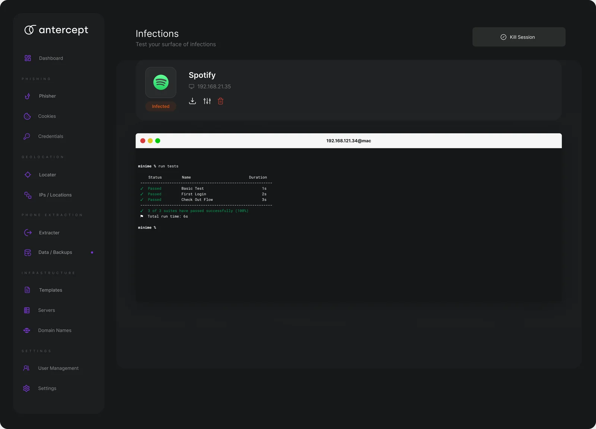
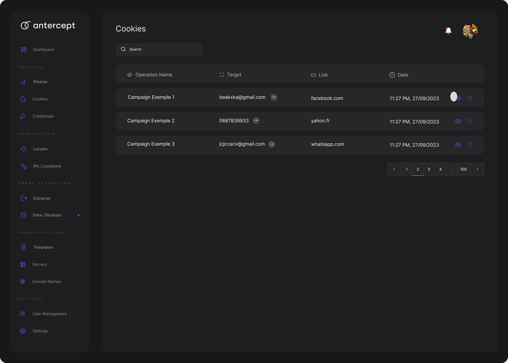

The science of exposure
What a click actually yields
The moment a target clicks a simulated lure, the awareness test has already done its teaching. What matters next is engineering: turning that click into evidence precise enough that a security team can say not “some people are careless” but “these accounts, on these devices, were exposed in these specific ways, and here is the timeline.”
In an authorized exercise, an interaction can surface three kinds of artefact: a session (proof that a browser reached the test page and, in a real attack, might have carried a live login), a cookie (the token a browser would have offered a real site), and a credential (what a person typed into a form). Antercept’s second capability is to capture these cleanly, label them as evidence, and never let them become anything more than a lesson.
A credential, as evidence
The most sobering artefact is a credential: the username and password a person typed into a form that looked, for a moment, like the real thing. In a criminal operation this is the crown jewel. In an authorized test it is the most powerful teaching moment there is — provided it is handled as evidence of a behaviour, never as a usable secret. Antercept records that a credential was entered, by whom, and when, and treats the secret itself as something to be reported and reset, not retained.
In an awareness test, the password is not a prize. The keystroke is the lesson.
The end of an operation is containment, not a window
It is tempting to imagine the climax of a test as an operator leaning toward a live feed, watching a target move around their own machine. That is the wrong picture, and Antercept is built to make it impossible to hold. A phishing-awareness exercise never reaches into a person’s device, never streams their screen, never watches their keystrokes on their own desktop. What it observes is far narrower and far more useful: what crossed the boundary of the test page — the request that arrived, the token a browser would have offered, the characters typed into a form that was never real. Everything else is out of scope by design.
So the “operation view” is not a surveillance panel; it is a close-out. When an interaction completes, the capture window ends, the artefacts are frozen as evidence, and the only remaining controls are the ones that make exposure safe: revoke whatever token was demonstrated, flag the account for a reset, and notify the person. The scheme below is the whole of it — four things recorded on the page, four things done in response, and a hard line between them.
Read the figure as a promise about what is absent as much as what is present. There is no live feed, no file tree, no view of the person’s own apps, no keystroke stream from their machine — because none of that teaches awareness, and all of it would turn an exercise into intrusion. The four responses on the right are the real “action”: the moment an artefact is recorded, the clock starts on making it harmless. A demonstrated token is revoked so it can never be replayed; a typed password is scheduled for reset and is never retained as a usable secret; the person is told what happened and the record is closed. That close-out is the actual end of an operation — the point where a lesson is banked and the organisation is measurably safer than it was an hour before.
A test that could keep watching has already stopped being a test. The win condition is a revoked token and a reset password, not a window into someone’s desk.
Part 2 · The structure
The exposure timeline
Isolated artefacts are anecdotes; a sequence is evidence. Antercept assembles each target’s interaction into an exposure timeline: the message was delivered, then opened, then clicked, then a credential was entered — or, in the healthy case, it was reported. The timeline is what converts a scatter of events into a story a security lead can hand upward, and it is the backbone of every target record in the console.
The branch matters as much as the main line. A target who reaches “clicked” and then reports has produced the outcome the programme wants. By modelling reporting as a first-class branch of the timeline rather than an afterthought, Antercept keeps the healthy path as visible as the exposed one — and makes it countable.
Step a single fictional target forward through the timeline and watch the risk score climb with each stage — then drop sharply the moment the target reports. The number is a triage tool, not a verdict; it is designed to be earned, acted on, and cleared.
A transparent per-target risk score
Every target carries a risk score from 0 to 100. The temptation is to make it a black box; Antercept resists it. The score is a readable sum: the furthest point reached on the timeline sets a base, recency raises it, repeated exposure across campaigns raises it further, and a report lowers it sharply. A security lead can always answer the question a score must be able to answer — why is this number what it is?
Scores like this are not predictions about a person’s character; they are a triage tool. They answer “who needs attention first,” and they reset when the test is resolved, because a risk score that never comes down is just a scarlet letter. Antercept’s score is designed to be earned, acted on, and then cleared.
Correlating evidence across a target
A single person may appear in several campaigns, on several devices, from several cities. Evidence is most useful when it is correlated: a cookie from one test and a credential from another, tied to the same target, tell a richer story than either alone. Antercept keys everything to a stable target identity, so the console can show not just “this click” but “this person’s pattern across the programme.”
Correlation is also where the ethical line is sharpest. The same machinery that lets a criminal build a dossier lets a security team see which of its own people are repeatedly exposed and need help. The difference, again, is authorization and intent: Antercept correlates to protect a known workforce, on records that are fictional until a real programme supplies its own authorized scope.
Part 3 · In the console
Seeing it in the console
Everything in this chapter is visible in the operator console on the project page. Pick a campaign and run it; watch targets move along the timeline; open any target to see its device, its city, the evidence its interaction produced, and the risk score that follows. The console is where the science of exposure becomes an interface a team actually uses.
Product direction · Proposed AI capability
Predicting infection status without confusing it with evidence
An infection-status assistant could help an operator decide which simulated endpoint result needs review first. The prediction would sit beside the observed evidence, with a visible explanation of what is still unknown.
In an authorized exercise, the proposed model would combine the event sequence, endpoint protection signals, delivery result and time since the last observation. It would estimate the likely exercise outcome: blocked, execution observed, or unresolved. A click alone would never count as confirmation of an infection.

Two layers in one result
Observed: the timestamped events the system actually received. Estimated: the model’s likely outcome, uncertainty and contributing signals. A stale heartbeat or missing endpoint event would lower confidence and could cause the assistant to abstain. “No evidence received” would remain distinct from “blocked.”
For example, a fictional result might read: “Status unresolved. Link interaction observed; endpoint confirmation missing. Review the endpoint record.” The operator would confirm the result or leave it unresolved, with that decision preserved in the audit trail.
How I would validate it
Training labels would come from operator-verified exercise outcomes. Evaluation would split by campaign and time to reduce leakage, then measure calibration, false negatives and the share of cases that require abstention. The product would expose the model version and observation window beside each estimate. These are design assumptions; this chapter does not report a trained infection model or measured performance.
Keep the evidence inspectable
An AI summary is useful only when the underlying record is easy to inspect. The evidence view keeps the operation and session context together so the reviewer can trace a conclusion back to an observation.

Conclusion: evidence that leads somewhere
Evidence only earns its keep if it closes a loop. Each target can be marked resolved once the lesson is delivered and the account reset — moving it to a reported state, dropping its risk, and recording that the programme did its job. The measure of a good awareness operation is not how much evidence it gathers but how quickly that evidence turns into a taught person and a closed record.
The final chapter zooms out from the individual target to the whole operation: the map of where exposure concentrates, and the infrastructure Antercept manages to run a programme at scale.